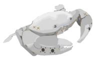

FTC BIOBUZZ 2026–27 · questions from the official Judging Question Bank · feedback scored against the Competition Manual award criteria
Press “Draw a question” to start.
Speak with the button above, or type. You can edit the transcript before asking for feedback.
| Award | Question | Score |
|---|
No answers graded yet. Scores stay in this browser only.